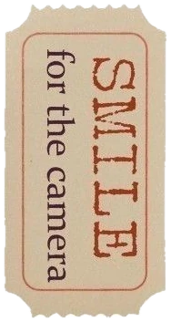

About me
I'm a Computer Engineering student at the University of Florida (Class of 2028) with a minor in Philosophy. I work where engineering meets product: I like owning a feature from the first user conversation through the PRD to shipped code.
Most recently I was a software engineering & product management intern at Fuzzy AI in Singapore, where we launched to Product Hunt Product of the Day & Week. Right now I'm building a computer-vision medical monitoring app with Dream Team Engineering and doing ML as a Breakthrough Tech × Cornell Tech fellow.
- Python
- C++
- TypeScript
- React
- Flask
- C#/.NET
- SQL
- PostgreSQL
- MediaPipe
- RAG & agents
- PRDs & OKRs
- A/B testing

to: whoever's reading,
thanks for stopping by ✶